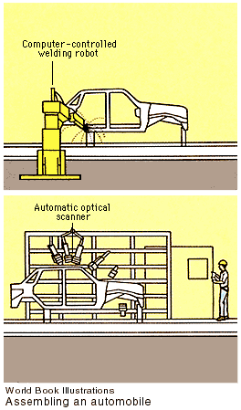

5. The consumer society embraces the machine-made object (throughout
the 1900's)
Mass production, beginning
with Henry Ford's invention of the assembly line (1913), made available
low cost, and often low quality, goods to a consumer society. The individual
handmade object became a thing of the past except as an elite work of
fine art. Architects and designers began to focus on the art of the
machine or machine age art. Le Corbusier found inspiration in steamships
and created the International Style in architecture.
Art deco designers in 1925 brought modern, streamlined forms to furnishings
and interior design.
Advertising art, architectural
journals, and photos and features in popular magazines dominated popular
culture and replaced social patrons as taste makers. Marcel Duchamp
and the Dadaists elevated "ready-mades" (objects such as urinals and
wine racks) to elite status in museums. Later, "found objects" (castoffs
and rubbish) became works of art in the hands of Joseph Cornell or Louise
Nevelson.
Commercial art inspired
1960's Pop
art and, ultimately, the antiart movements of the 1970's and 1980's.
Mass production of objects inspired artists to turn to photocopiers
(1946), television, and computers to create artworks. The art press
made possible rapid communication exchange and appropriation of images.
The German critic Walter Benjamin looked ahead to this new age in his essay "Art in the
Age of Mechanical Reproduction" (1937).

More information:
|